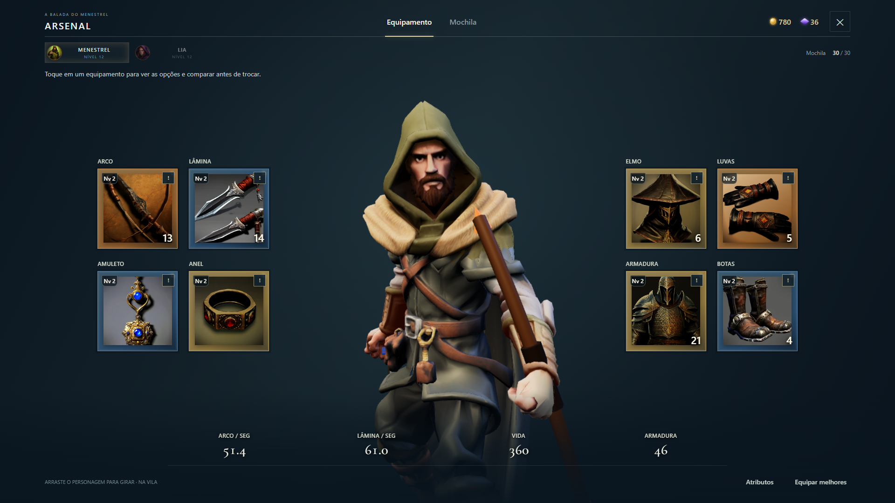
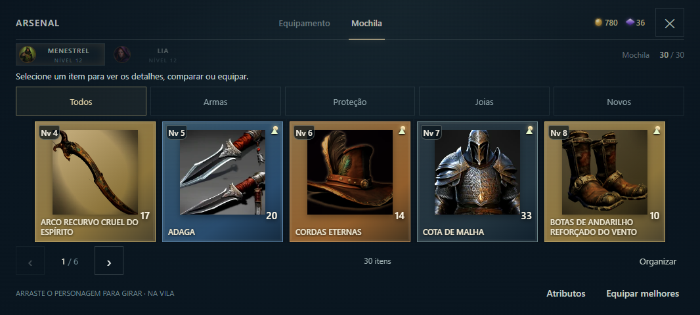
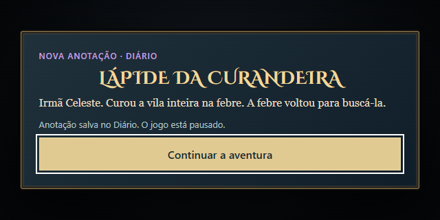

Mais clareza para escolher. Mais tempo para descobrir.
Textos maiores, instruções em cada etapa e mais espaço para os itens. As descobertas do Diário agora pausam a aventura para você ler com calma.
Equipamentos com orientação
O personagem permanece em idle na aba Equipamento, com uma prévia independente do combate. Os cartões identificam o nível do item; os atributos de dano indicam o valor por segundo. Toque em um espaço, escolha uma peça, compare os valores atuais e novos e confirme em Equipar. A tela de Atributos também explica os indicadores.

Instruções visíveis e textos maiores para orientar a troca.
A mochila ganha a tela
A lista de itens ocupa a largura disponível e dispensa a prévia cortada do personagem. Categorias e páginas ajudam a encontrar as peças. Ao equipar algo melhor, uma faixa própria mostra os ganhos sem cobrir o botão de fechar.

Mais espaço para visualizar e escolher os itens.
Uma pausa para as histórias
Lápides e novas anotações abrem uma mensagem central. O cenário fica monocromático, a mensagem mantém suas cores e o jogo permanece pausado até tocar em Continuar a aventura. O conteúdo fica salvo no Diário. As anotações aguardam outras janelas, e as emboscadas de lápides esperam o fim da leitura.

Leitura sem prazo para desaparecer e com retomada explícita.
Capturas da interface na bancada de testes. Nove resoluções, toque, rotação e fila de leituras verificados no navegador. Teste em aparelho físico pendente.